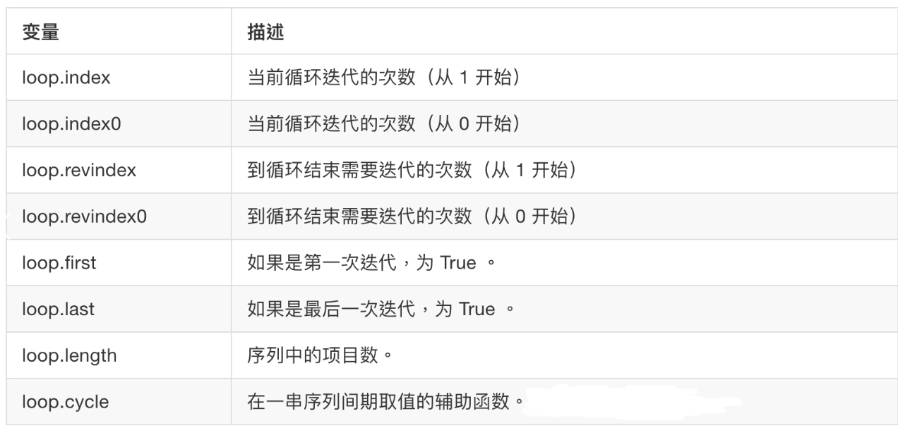

Django使用jinja2模板
jinja2介绍
Jinja2：是 Python 下一个被广泛应用的模板引擎，是由Python实现的模板语言，他的设计思想来源于 Django 的模板引擎，并扩展了其语法和一系列强大的功能，尤其是Flask框架内置的模板语言
由于django默认模板引擎功能不齐全,速度慢，所以我们也可以在Django中使用jinja2, jinja2宣称比django默认模板引擎快10-20倍。
Django主流的第三方APP基本上也都同时支持Django默认模板及jinja2，所以要用jinja2也不会有多少障碍。
安装jinja2模块
pip install jinja2
Django配置jinja2
- 在项目文件中创建 jinja2_env.py 文件
from jinja2 import Environment
def environment(**options):
env = Environment(**options)
return env
2.在settings.py文件
TEMPLATES = [
{
'BACKEND': 'django.template.backends.jinja2.Jinja2',#修改1
'DIRS': [os.path.join(BASE_DIR, 'templates')],
'APP_DIRS':True,
'OPTIONS':{
'environment': 'jinja2_env.environment',# 修改2
'context_processors':[
'django.template.context_processors.debug',
'django.template.context_processors.request',
'django.contrib.auth.context_processors.auth',
'django.contrib.messages.context_processors.messages',
],
},
},
]
jinja2模板的使用绝大多数和Django自带模板一样

jinja2自定义过滤器
在jinja2_env.py文件中自定义过滤器
from jinja2 import Environment
def environment(**options):
env = Environment(**options)
# 2.将自定义的过滤器添加到 环境中
env.filters['do_listreverse'] = do_listreverse
return env
# 1.自定义过滤器
def do_listreverse(li):
if li == "B":
return "哈哈"